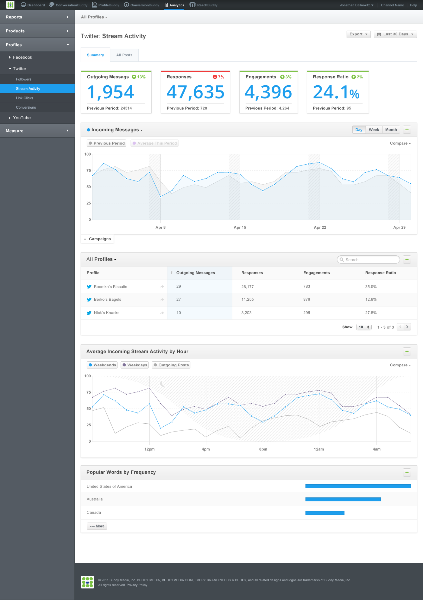
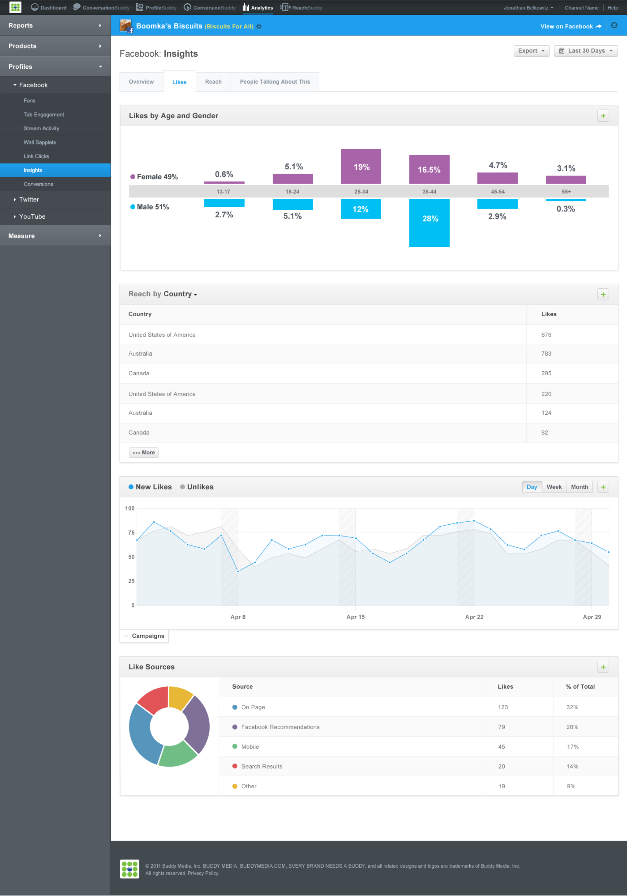
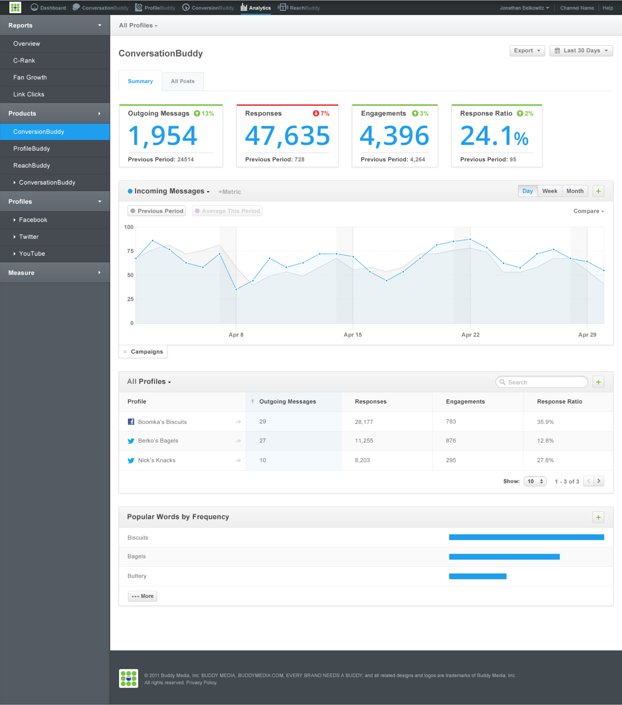
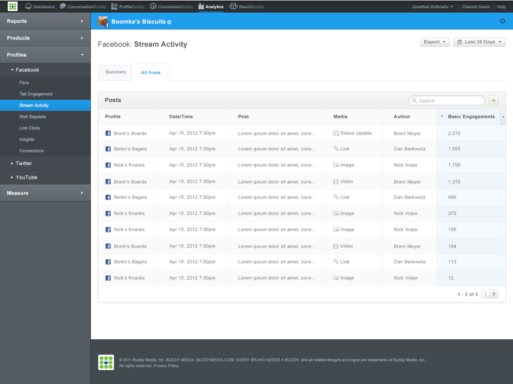
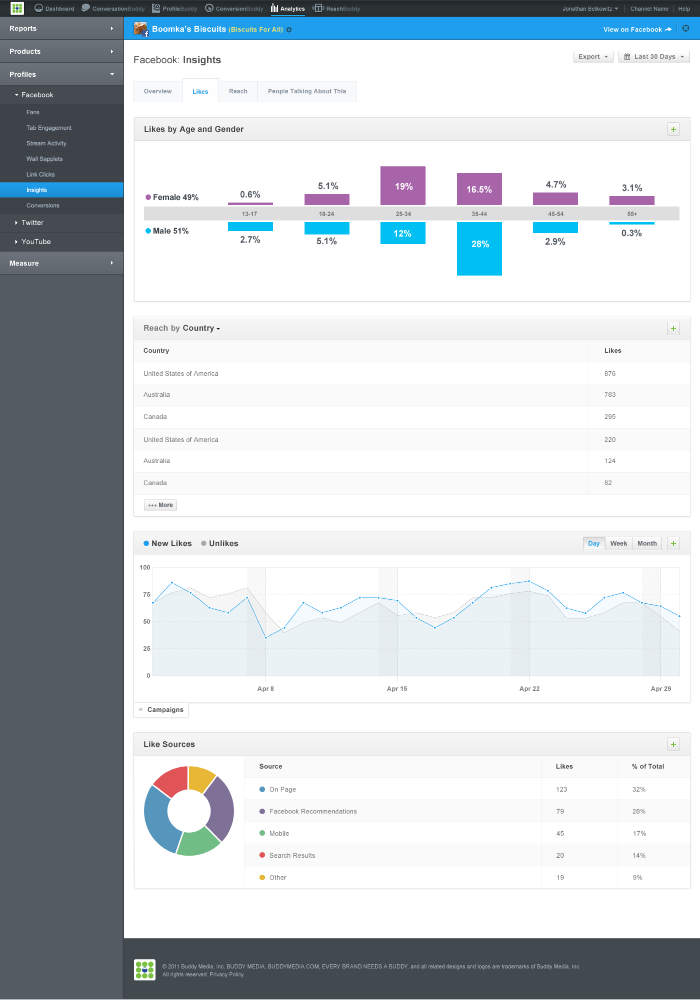
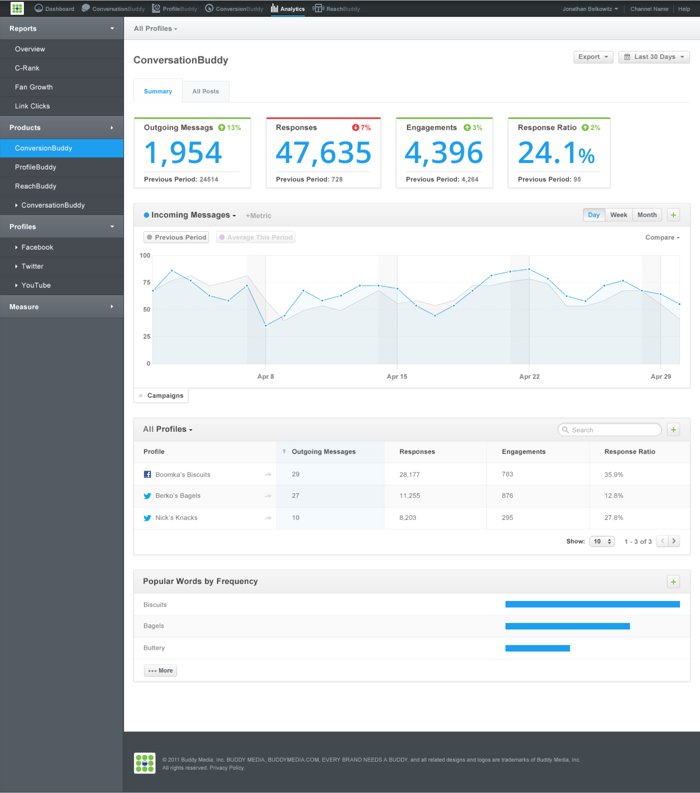
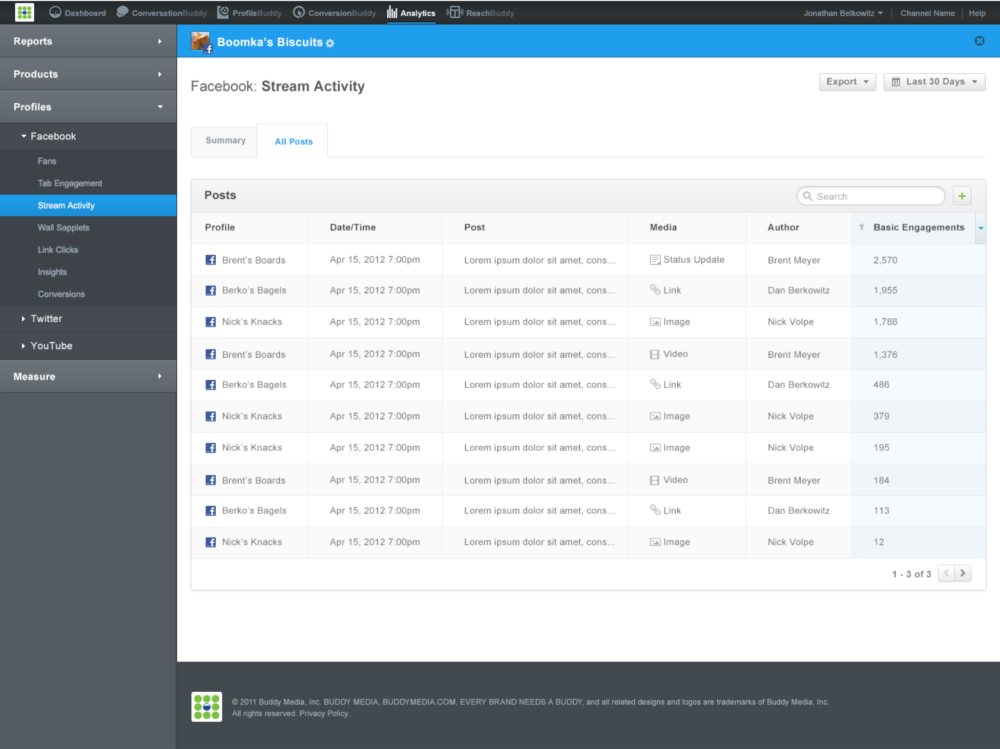
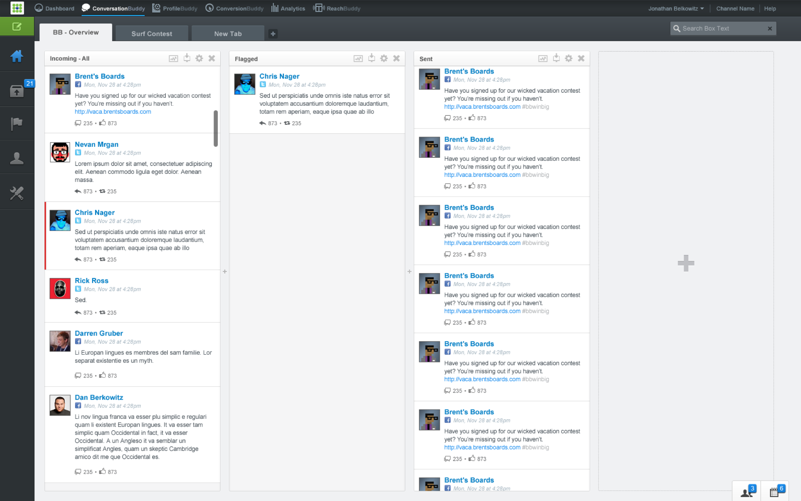
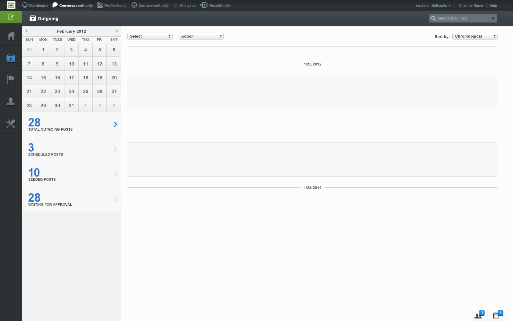

During my time at BuddyMedia I had the opportunity to design several products that were used by social media marketers at some of Fortune 500's biggest companies. It was a cycle of adding features, revising products, integrating new features as expectations grew, and designing completely new products.
Analytics 3.0
Analytics 3.0 was a large undertaking. It was a ground up redesign of BuddyMedia's entire analytics offering. The goal was to go from static reports to modular components that could be quickly combined to create new reports.
 





ConversationBuddy 2.0 (early concept design explorations)
While I didn't get to design the final ConversationBuddy product, I did get to participate in some of the early explorative design. ConversationBuddy was meant to be the TweetDeck/Hootsuite of BuddyMedia's product offering.
 Responsible for
interface design